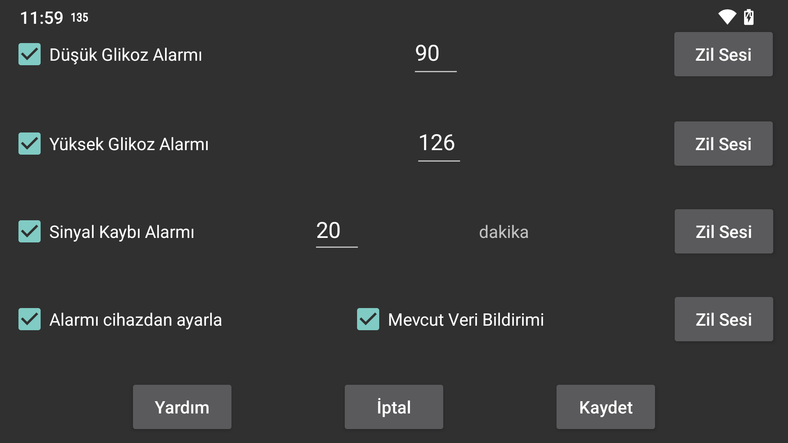

ar be de es fr hi it nl pl pt ru sv tr uk uz zh en
Bluetooth üzerinden alınan akış değerleri, düşük ve yüksek glikoz alarmlarını ayarlamak için kullanılabilir.
Alarmın çalması gereken düşük değer.
Alarmın çalması gereken yüksek değer.
Bluetooth üzerinden glikoz değeri alınamaması durumunda alarmın kaç dakika sonra çalması gerektiğini belirtin.
Aşağıdaki koşullardan biri karşılandığında alarmlar duracaktır:
- Belirtilen süre dolduğunda,
- Eğri görünümüne dokunulduğunda,
- Juggluco'nun Android bildirimine dokunulduğunda (kilitsiz durumda),
- Juggluco'da alarm bildiriminin iptal düğmesine dokunulduğunda,
- Yüzen Glikoz'a dokunulduğunda.
Bazen sensör çalışmayabilir. Juggluco’da verinin eksik olduğunu gördüğünüz durumda bunu açarsanız, sensör tekrar çalıştığında bildirim alırsınız. Verinin Juggluco bildirimi veya saat yüzü nedeniyle eksik olduğunu bildiğinizde, mevcut veri bildirimi almazsınız.
Her alarm için hangi Zil Sesinin çalınacağını ve ne kadar süreyle çalacağını belirleyebilirsiniz.
Bunu açtığınızda, Zil Sesi Android Alarmlar kategorisine göre düşük, yüksek ve sinyal kaybı alarmları için çalınır. Bu, Android ayarlarında ses seviyesinin Alarmlar ses seviyesiyle yönetildiği ve tüm telefonun sesi kapatıldığında veya titreşime ayarlandığında dahi sessize alınmadığı anlamına gelir. Alarmı cihazdan ayarla ayarlanmadığında, zil sesi ses seviyesi kullanılır. Bu durum mevcut veri bildirimi için geçerlidir.